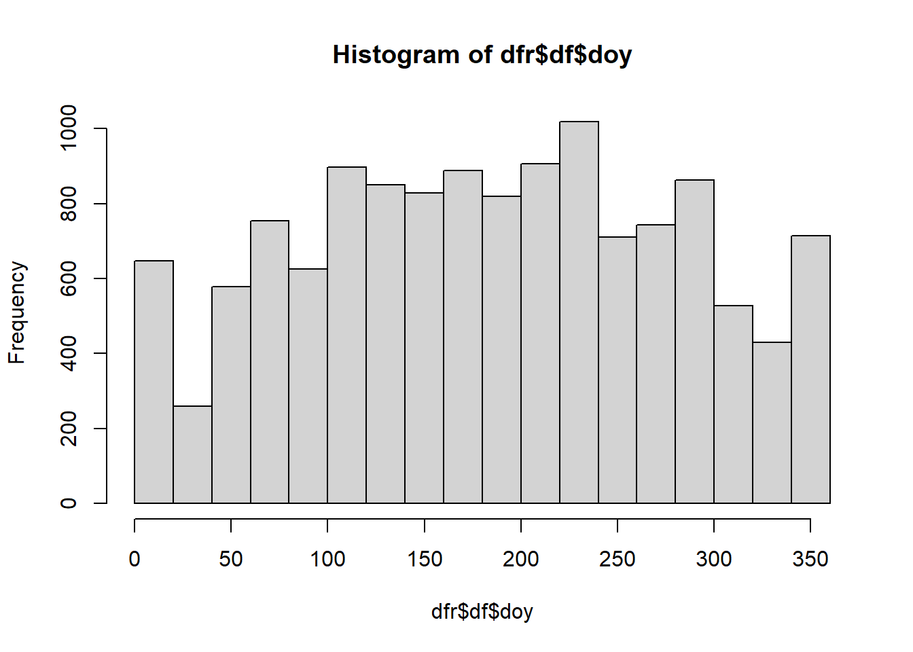

###################################################################
#https://cran.r-project.org/web/packages/baytrends/vignettes/Processing_Censored_Data.html
#install.packages("baytrends")
# Data Exploration
###################################################################
library(baytrends)
dataCensored<-dataCensored
head(dataCensored) station date layer secchi salinity do wtemp tss chla din nh4
1 CB3.3C 1985-05-21 AP NA 10.500 6.2 18.1 6.9 7.000 0.280 0.1040
2 CB3.3C 1985-05-21 B NA 14.400 0.0 15.3 7.6 3.000 0.372 0.2550
3 CB3.3C 1985-05-21 BP NA 14.400 0.0 15.3 7.8 2.000 0.375 0.2630
4 CB3.3C 1985-05-21 S 1.1 10.105 7.6 18.8 7.0 9.500 0.259 0.0665
5 CB3.3C 1985-06-04 AP NA 9.600 6.0 21.4 5.0 3.370 0.275 0.0960
6 CB3.3C 1985-06-04 B NA 14.600 0.0 17.7 10.4 1.775 0.370 0.2860
no23 po4 tdn tdp tn tp
1 0.1760 0.00300 0.52 0.0360 0.6510 0.05120
2 0.1170 0.00630 0.64 0.0170 0.7273 0.03100
3 0.1120 0.00420 0.62 0.0080 0.7260 0.02520
4 0.1925 0.00575 0.54 0.0255 0.7680 0.04760
5 0.1790 0.00330 0.47 [0.0000, 0.0050] 0.6230 [0.02310, 0.02810]
6 0.0840 0.00895 0.61 [0.0040, 0.0065] 0.7275 [0.02375, 0.02625]dfr <- analysisOrganizeData(dataCensored)
### Record Count
`Beginning Number of Records: 13062`
`Number of Records After Processing: 13062`
### Parameters
*Table: List of Parameters.*
Dep. Var. Parameter Name Units Log Tran. GAM Dep. Var.
--------- ---------------------------- ----- --------- -------------
secchi Secchi Depth m FALSE secchi
chla Chlorophyll a (Corrected) ug/L TRUE lnchla
do Dissolved Oxygen mg/L FALSE do
tn Total Nitrogen mg/L TRUE lntn
tp Total Phosphorus mg/L TRUE lntp
po4 Orthophosphorus mg/L TRUE lnpo4
tdp Total Dissolved Phosphorus mg/L TRUE lntdp
no23 Nitrite + Nitrate mg/L TRUE lnno23
nh4 Ammonium mg/L TRUE lnnh4
tdn Total Dissolved Nitrogen mg/L TRUE lntdn
din Dissolved Inorganic Nitrogen mg/L TRUE lndin
salinity Salinity ppt FALSE salinity
tss Total Suspended Solids mg/L TRUE lntss
wtemp Water Temperature deg C FALSE wtemp
### Layers
*Table: List of Layers.*
Layer ID Layer Name
-------- ----------------
S Surface
AP Above Pycnocline
BP Below Pycnocline
B Bottom
### Models
*Table: List of Models.*
Option Model
------ ----------------------------------------------
0 Linear Trend with Seasonality
1 Non-linear Trend with Seasonality
2 Non-linear trend with Seas+Int
3 Non-linear trend with Seas+Int. & Intervention
4 Non-linear trend with Seas+Int. & Hydro Adj
##
### Stations
*Table: List of Stations.*
Station ID Latitude Longitude CB 92 Seg. Flow Adj. Gage Mth. Group
---------- -------- --------- ---------- -------------- ----------
CB3.3C 38.9960 -76.3597 CB3MH 01578310 MD-Main
CB4.1C 38.8259 -76.3994 CB4MH 01578310 MD-Main
CB5.4 37.8001 -76.1747 CB5MH_VA 01578310 VA-All
TF5.5 37.3126 -77.2328 JMSTF1 02035000 VA-All
EE2.1 38.6549 -76.2643 CHOMH1 01491000 MD-Trib
EE3.0 38.2809 -76.0103 FSBMH 01578310 MD-Trib
TF2.2 38.6907 -77.1111 POTTF_MD 01646500 MD-Potomac
LE2.2 38.1576 -76.5980 POTMH_MD 01646500 MD-Potomac#dfr$analySpec$depVarList
hist(dfr$df$secchi)table(is.na(dfr$df$secchi))
FALSE TRUE
4835 8227 hist(dfr$df$salinity)table(is.na(dfr$df$salinity))
FALSE TRUE
12761 301 hist(dfr$df$do)
table(is.na(dfr$df$do))
FALSE TRUE
12916 146 hist(dfr$df$wtemp)table(is.na(dfr$df$wtemp))
FALSE TRUE
12966 96 hist(dfr$df$tss)table(is.na(dfr$df$tss))
FALSE TRUE
12754 308 table(is.na(dfr$df$chla))
FALSE TRUE
12286 776 table(is.na(dfr$df$din))
FALSE TRUE
12463 599 table(is.na(dfr$df$n023))< table of extent 0 >table(is.na(dfr$df$nh4))
FALSE TRUE
12656 406 table(is.na(dfr$df$no23))
FALSE TRUE
12701 361 table(is.na(dfr$df$po4))
FALSE TRUE
12508 554 table(is.na(dfr$df$tdn))
FALSE TRUE
11948 1114 table(is.na(dfr$df$tdp))
FALSE TRUE
12299 763 table(is.na(dfr$df$tn))
FALSE TRUE
12467 595 table(is.na(dfr$df$tp))
FALSE TRUE
12606 456 table(dfr$df$year)
1985 1986 1987 1988 1989 1990 1991 1992 1993 1994 1995 1996 1997 1998 1999 2000
393 479 489 480 466 494 496 490 484 471 476 398 404 398 384 387
2001 2002 2003 2004 2005 2006 2007 2008 2009 2010 2011 2012 2013 2014 2015 2016
378 382 390 398 401 398 404 394 382 306 351 344 340 328 338 339 hist(dfr$df$doy)
table(is.na(dfr$df$doy))
FALSE
13062 table(dfr$df$station)
CB3.3C CB4.1C CB5.4 EE2.1 EE3.0 LE2.2 TF2.2 TF5.5
2163 2147 1889 1884 730 2237 1132 880 table(dfr$df$month)
Jan Feb Mar Apr May Jun Jul Aug Sep Oct Nov Dec
733 753 1039 1250 1280 1309 1407 1418 1169 1139 805 760 table(is.na(dfr$df$no23))
FALSE TRUE
12701 361 hist(dfr$df$do)
table(is.na(dfr$df$do))
FALSE TRUE
12916 146 # Load the first 10 rows of the built-in baytrends dataframe
# dataCensored into a dataframe and just a few fields.
df0 <- dataCensored[1:10,c("station","date","layer","tss","tdp","tp")]
df0 station date layer tss tdp tp
1 CB3.3C 1985-05-21 AP 6.9 0.0360 0.05120
2 CB3.3C 1985-05-21 B 7.6 0.0170 0.03100
3 CB3.3C 1985-05-21 BP 7.8 0.0080 0.02520
4 CB3.3C 1985-05-21 S 7.0 0.0255 0.04760
5 CB3.3C 1985-06-04 AP 5.0 [0.0000, 0.0050] [0.02310, 0.02810]
6 CB3.3C 1985-06-04 B 10.4 [0.0040, 0.0065] [0.02375, 0.02625]
7 CB3.3C 1985-06-04 BP 6.6 0.0320 0.04500
8 CB3.3C 1985-06-04 S 5.8 0.0640 0.08410
9 CB3.3C 1985-06-18 AP 17.5 0.0370 0.05510
10 CB3.3C 1985-06-18 B 31.2 0.0140 0.02770